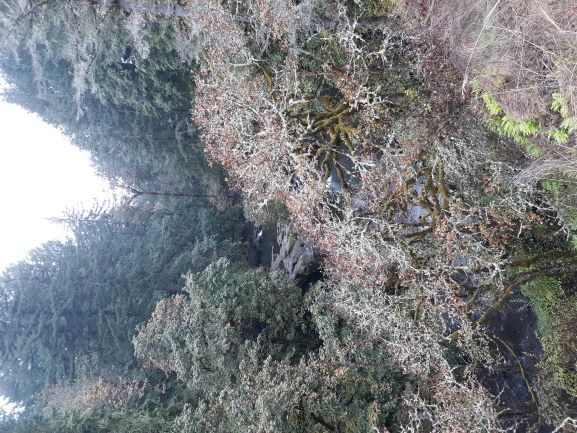
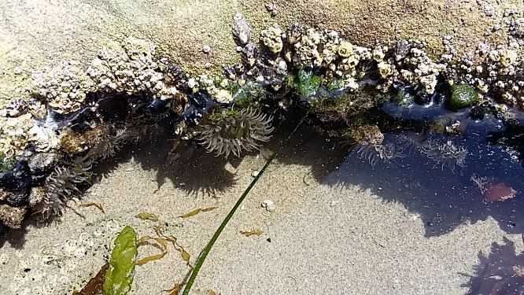

My favorite places
I am happy when I am in these places:
- my garden
- my kitchen
- the woods

- most other gardens
- Bloomington, IN, the place that feels like home
Here are some places I have enjoyed visiting:
- National Parks: Mount Rainier, Yellowstone, Glacier, Cascades, Olympic
- Israel
- Salmon Huckleberry Wilderness in Oregon
- Many different tidal pools on the Pacific Coast of the western US